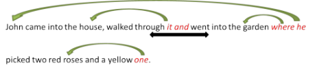

Cohesion
 |
Cohesion is the way ideas are linked together to make meaning.
For example, look at the sentence and focus on the words in red and black.
John came into the house, walked through it and went into the garden where he picked two red roses and a yellow one.
The words in red are examples of cohesion in English and they link to the words in black.
- it refers to the house
- and links the two actions
- where links the garden to the action
- he refers to John
- one at the end tells us it's also a rose so we don't need to repeat the noun
Notice, too, that we don't repeat John in walked through it because we know who did that.
We can refer backwards in a text like this:

This is called anaphoric referencing.
It's also possible to refer forwards in a text but that is rarer and gives a different, literary, feel sometimes.

This is called cataphoric referencing.
In all the cases above, we are concerned with what makes sentences hang together. This is called cohesion.
 |
Types of cohesion |
- Reference:
- This is often achieved using pronouns such as
he in the sentence about
John
above. The pronoun refers either back or forward to the noun in
sentences such as
John didn't tell me where he is
or
When she came in, I saw that Mary was very upset
Sometimes referencing is to a whole statement in examples such as
As I mentioned earlier ...
etc.
Here are some more examples:
A: Where's the car
B: I lent it to Mary
The bus broke down and that's why I'm late
When I finally got round to reading them, I thought the books were really good - Ellipsis:
- This means leaving out (ellipting is the
technical verb) a word because the reader /
listener knows what the reference is. In the
example above,
we don't repeat John for the second verb. In spoken
English, we very often get exchanges like
A: What's for lunch?
B: Cauliflower cheese (leaving out the clause, is for lunch)
Here are two more examples:
A: Who arrived?
B: John (ellipting the verb, arrived)
I don't like the red shoes but I love the blue (ellipting the noun, shoes) - Substitution:
- In this, we don't leave out the word but change it for something
more general. For example, above, the use of
one to
mean a rose or in something like
What wines do you want?
I'll take the French stuff - Conjunction:
- We use conjunction to join ideas
(you discovered a lot about conjunction in this course) in both spoken and written English. For
example, and went into the garden, above, or in exchanges like
Why did you open the cage?
Because I wanted to change the water - Lexical cohesion:
- This refers to the fact that in any text (written or spoken) there are likely to appear chains of related words. As you saw in the section on relationships between words, a text about hospitals it is likely to contain nouns such as medicine, patient, nurse, ward, treatment and doctor with verbs such as treat, admit, operate, sterilise and care for.
- Grammatical cohesion:
- This refers to the fact that we employ similar grammar in texts
to keep the theme, especially the tense, consistent. For
example, the use of simple past tenses in:
He went into the bar, walked up to the counter and ordered three beers
Here's an example of grammatical and lexical cohesion working together:
"While we were on holiday in a Spanish resort we used to go to the beach every morning and then have lunch in a little restaurant in town where the tourists didn't go very much. The food was fantastic and very cheap and the fish dishes in particular were wonderful."
The tenses are consistently in the past (underlined), the nouns related to food and restaurants are also present (in red) and there's a second lexical string concerning holidays (in green). The text also contains examples of other forms of cohesion. Spot them.
 |
Learn more about: |
 |
Take a test |
To make sure you have understood so far, try
a very short test of your knowledge
of cohesion.
Use the 'Back' button to return when you have done that.
If you got that all right, it is safe to move on.
The next part of this section considers how whole texts are made coherent and cohesive in English. Click here to go on.